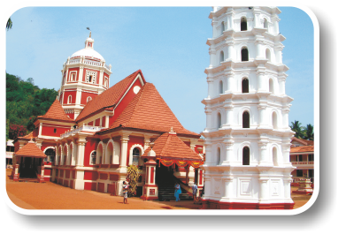

Dudhsagar literally means 'sea of milk'. Perched on the lofty heights of the Western Ghats and falling from 600 metres, Dudhsagar is the 5th highest waterfall in India. Legend has it that the King’s daughter went to bathe at the falls, when a prince appeared. Immediately, the virtuous and modest princess poured sugared milk into the pond to shield her body from the glances of the stranger. To this day, it is believed that this milk flows down the mountain in torrents.
Built by the Portuguese in 1612 to defend Goa's coastline, it is ideally situated at the mouth of the Mandovi River. The fort was used as a watering station by ships after a long voyage. The four-storey lighthouse situated here was assembled in 1864 and is the oldest in Asia. It was one of the four forts namely Cabo, Gaspar Dias, Reis Magos and Aguada that served as sentinels against attacks from invaders via the sea. The Gaspar Dias fort no longer exists, Cabo is now the Governor's Palace and Reis Magos is under renovation.
In the 1960s, Goa experienced an influx of hippies who began this market where second hand goods could be sold. It has since become a trend and is open for business every Wednesday at the Anjuna beach. At your own pace, you can wander around the stalls. Everything under the sun can be found here from a second hand bike to miniature items. You can try the delicious multicultural cuisine on offer and have your hair cut or get a tattoo! Be sure to banter so that you can bag yourself a bargain!
This 200 year old plantation boasts of a purely organic and natural environment, in which one can enjoy nature at its very best. The pond situated within attracts a number of birds of different varieties. Guests can explore the spicy world of Savoi Plantation.
Christianity was introduced to Goa during the 16th century by the Portuguese. Although many of the churches were damaged due to natural disasters, numerous still remain today. Breathtaking churches are found at Old Goa, make sure you set a day aside to see them all. The most legendary church is the Basilica of Bom Jesus, which enshrines the sacred remains of St. Francis Xavier. The basilica is dedicated to infant Jesus and has been declared a World Heritage Monument.

Situated in Ponda on the slope of the hillside, this strikingly colourful temple was built in the year 1738 by Shahurajit, the ruler of Satari taluka. From the main entrance one can see some impressive art of Hanuman, the Monkey God. The temple’s wooden doors coated with silver are also splendid. Goddess Durga is idolised by many Hindus and is known as a peacemaker as she settled a feud between the Hindu Gods, Vishnu and Shiva.
Beaches and tropical surroundings make Goa an ideal place for fishing. Years ago, many Goans were fishermen and although this is no longer the case, many still enjoy it as a pastime. It fits in with the 'sossegad' (laid back) lifestyle of the Goans. Fishing can be enjoyed at various spots. While angling in Goa, one can come across many interesting varieties of fish these include; salmon, mullet, catfish, rockfish, stingray, guitarfish and the local barramundi.

Feel the wind blowing through your hair and the adrenaline pumping through your veins in this fast and furious sport. There are two main racing tracks in Goa, one in Nuvem, South Goa and the other in Arpora, North Goa. Arpora: 4 p.m. - 10 p.m.
(Tue - Sun): 2914526. Nuvem: 4 p.m. - 10 p.m. (Tue - Sun): 2757899.
Try your luck at one of Goa's casinos with popular games such as roulette and blackjack. Many of the casinos are land based but there are some floating casinos on the Mandovi River. The casinos provide cultural entertainment on board, food and beverages.
Goans love to party and nightclubs are a major attraction in Goa. It is a chance for people to unwind, have a drink and release energy on the dance floor. Trance music is very popular, although a wide variety of music is played in clubs ranging from Reggae to Raaga to Bhangra to Salsa to Samba to Rock & Roll. Many clubs host theme nights which are great fun.
This is the staple food for Goans and is known as 'xitt coddi' in Konkani. The curry is usually yellowish-red in colour due to the presence of chillies and turmeric. This tangy and spicy dish can be cooked with a variety of fish, although mackerel is one of the favourites. The fish is served with steamed white rice and is a traditional Goan meal.
Made from pork meat and fat that has been loosely diced. The strings of sausages are marinated in pickling spices and then sun dried. They are usually served with pulao rice or in bread (choris pao). Goan sausages are very popular at feasts.
Copyright © 2017 All rights reserved